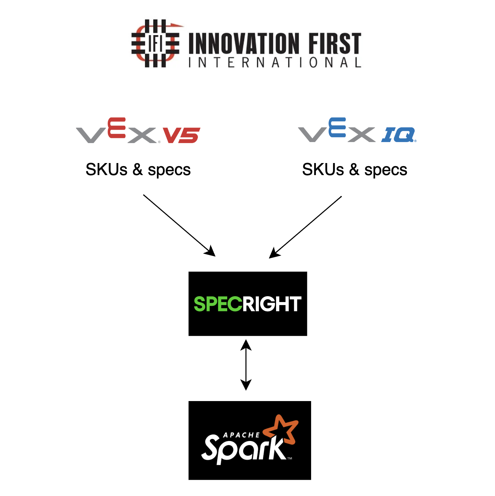
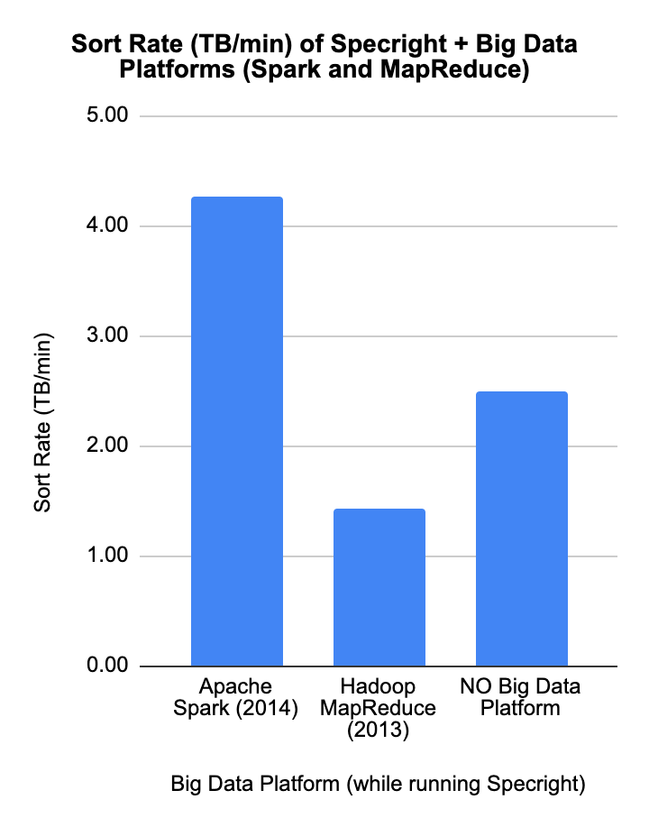
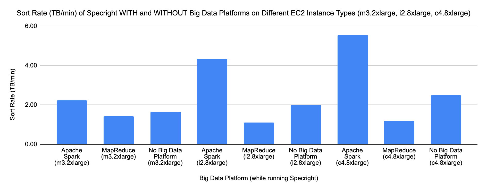
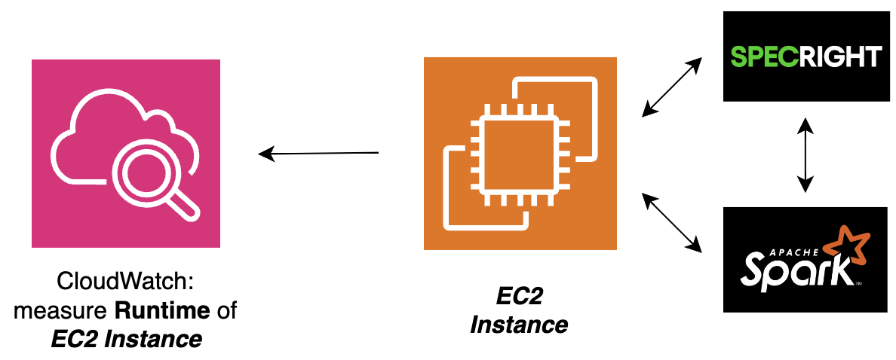
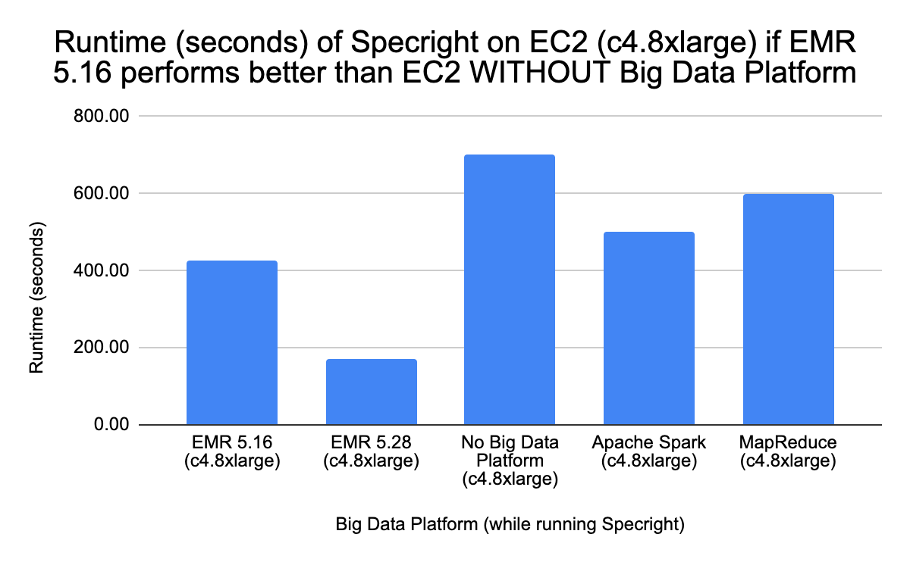
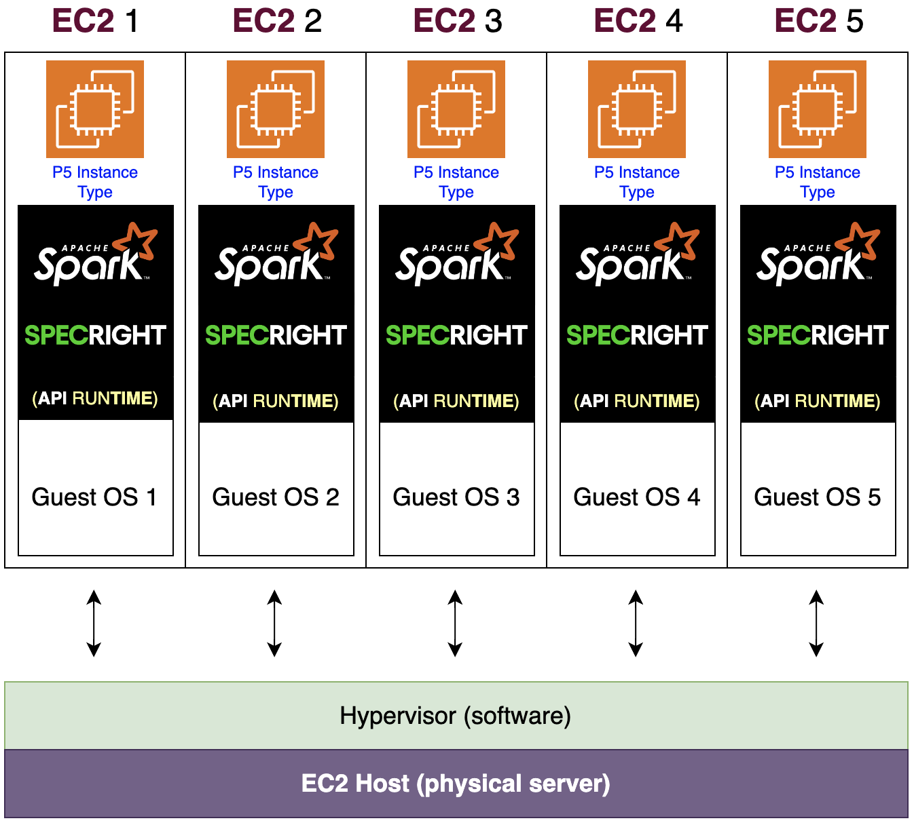
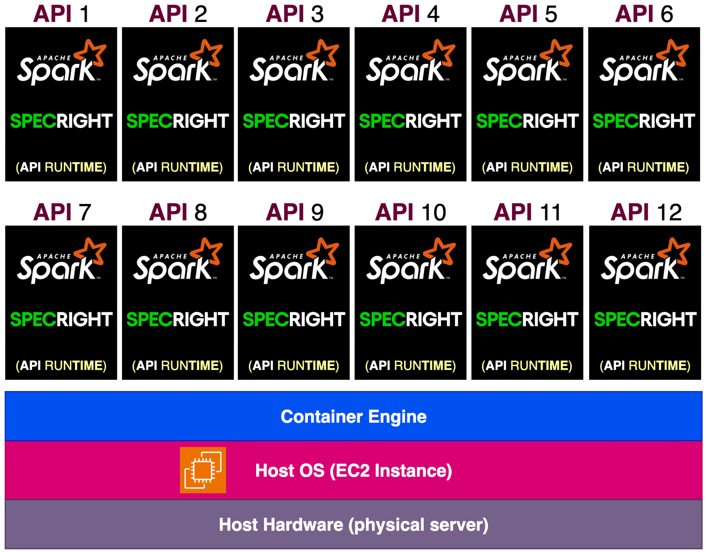

At a Glance
I ran a head-to-head performance test of two big data processing systems — Apache Spark and Hadoop — on Amazon's cloud to find the fastest and most cost-effective configuration for a specification management platform. The results give the company a clear, benchmark-backed recommendation rather than a guess.

Problem
Specification management platforms like Specright are built to help manufacturers track product specs, materials, and SKUs — but their conventional processing architecture has a ceiling. As product catalogs grow into the tens of thousands of SKUs and specification update cycles accelerate, the platform's ability to run bulk compliance checks, generate reports, and synchronize specification changes in real time degrades. For a company like Innovation First, Inc. — the maker of VEX Robotics products, with over 15,000 competition teams worldwide and a catalog spanning thousands of parts — that ceiling becomes a practical barrier to operations. The question is not whether the platform works, but whether it can keep up with the volume, and what happens to performance as that volume grows. Answering that question requires benchmarking multiple Big Data processing configurations under realistic load conditions rather than relying on vendor claims.
Solution
This project designed and benchmarked a prototype that integrates Apache Spark as a distributed processing backend for Specright, using Amazon EMR to run Spark jobs across multiple EC2 instance configurations. PySpark was used to simulate bulk specification processing workflows — joins, aggregations, and compliance filters across large SKU datasets — while CloudWatch captured performance metrics including job duration, CPU utilization, and memory pressure across instance types. The benchmark compared Spark on EMR against Hadoop MapReduce to establish a performance baseline, then tested multiple EC2 instance configurations to identify the optimal cost-performance trade-off for the use case. Key findings established that Spark's in-memory processing provided significant throughput improvements over MapReduce for the iterative specification processing workload, and that a specific EMR configuration delivered the best performance-per-dollar ratio. The project was structured using Agile methodology with weekly sprints, producing a final presentation and written report evaluating the architecture's viability for production use.
Skills Acquired
- Apache Spark — the distributed data processing engine used as the proposed backend for Specright's bulk operations. Spark's in-memory computation model makes it significantly faster than disk-based alternatives like Hadoop MapReduce for iterative workloads — a property directly relevant to specification compliance checking, which requires multiple passes over large datasets.
- PySpark — the Python API for Apache Spark, used to write the data processing jobs that simulated Specright's bulk specification workflows. PySpark's DataFrame API allowed familiar Pandas-style transformations to be expressed in a form that Spark could distribute across the EMR cluster.
- Amazon EMR — AWS's managed big data service that provisions and manages Spark and Hadoop clusters on EC2. EMR was used to run benchmark jobs across multiple cluster configurations, abstracting cluster setup so that performance differences could be attributed to instance type and configuration rather than setup variance.
- AWS EC2 — the underlying compute layer for the EMR clusters. Multiple EC2 instance families and sizes were benchmarked to determine which configuration delivered the best throughput for the specification processing workload at an acceptable cost.
- CloudWatch — AWS's monitoring service, used to capture job duration, CPU utilization, and memory metrics across all benchmark configurations. CloudWatch data provided the quantitative basis for comparing configurations rather than relying on subjective timing observations.
- Big Data — the domain framing for the project. Understanding Big Data means understanding when a problem actually requires distributed processing, what the architectural options are, and how to evaluate trade-offs between throughput, cost, and operational complexity — the core analytical framework applied throughout the benchmark design.
- Agile — the project management methodology used to structure the work into weekly sprints with defined deliverables. Agile's iterative cadence meant benchmark scope and findings could be refined as data came in rather than locked into a fixed plan from day one.
The project overview below covers the architecture and findings in detail — but the motivation goes back to a personal connection with the problem that specification management solves.
Deep Dive
What Happens When Specification Management Can't Keep Up?
I grew up working in my father's machine shop where we fabricated airplane parts for government contracts. I remember watching him scramble to find the right blueprint for a specific screw size right before a shipment deadline — with multiple contracts requiring different specs all due at the same time. That problem never fully went away for me. It's the same problem that companies at every scale deal with: how do you manage thousands of specifications and SKUs efficiently, especially when the volume keeps growing?
For this Georgia Tech CS 6675 Big Data Systems & Analytics final project, I built a prototype design that enhances Specright — a leading specification management platform — with Apache Spark as a Big Data processing backend. The real-world company I modeled this around was Innovation First, Inc., the maker of VEX Robotics products — a company I know well as a longtime VEX Robotics competition coach. With over 15,000 competition teams worldwide and a product catalog spanning thousands of SKUs, they're a perfect case study for why specification management at scale demands something more powerful than a standard platform alone.
Why Specright + Apache Spark?
Specright is built on Salesforce and hosted on AWS. It's rated 4.5 out of 5 stars and customers genuinely love it. But when I analyzed 85 real customer reviews, I found a consistent cluster of complaints around computing speed, Conga Batch Function issues, data limits, and implementation problems — all of which point to the same root cause: the platform struggles when data volumes get large.
Apache Spark is built for exactly that problem. It processes massive datasets in-memory across distributed clusters, making it dramatically faster than both traditional processing and its predecessor Hadoop MapReduce. In the 2014 Daytona GraySort benchmark, Spark sorted 100 TB using just 206 nodes in 23 minutes — while MapReduce needed 2,100 nodes and 72 minutes to sort roughly the same amount. Fewer nodes, faster results. That efficiency difference is what I wanted to explore in the context of Specright.
Architecture Overview
The high-level design has Innovation First's software development team gathering all VEX IQ and VEX V5 competition product specs and SKUs — from physical binders to digital records — and importing them into the Specright platform. From there, the Specright API and Apache Spark API run together on an AWS EC2 instance. Amazon CloudWatch monitors the EC2 instance in real time to collect performance data.
↓ Digitized and imported
Specright Platform
↓ API runs on EC2 alongside Spark
AWS EC2 Instance (Specright API + Apache Spark API)
↔ Monitored by
Amazon CloudWatch (measures Sort Rate & Runtime)
↓ Insights delivered to
Innovation First Sales & Manufacturing Departments

High-level architecture — VEX IQ & V5 SKUs and specs flow from Innovation First into Specright, which runs alongside Apache Spark on an EC2 instance.
I tested three EC2 instance types — m3.2xlarge, i2.8xlarge, and
c4.8xlarge — and three processing configurations: Apache Spark, Hadoop
MapReduce, and no Big Data platform at all. CloudWatch was the tool for collecting the
performance measurements.
How the Prototype Was Designed
I followed an Agile framework to structure the project: the Initiative was to boost the business of Innovation First; the Epic was to enhance Specright with Apache Spark; the User Story was that sales and manufacturing users at Innovation First need access to a high-performing Specright platform.
Phase 1
Baseline Design: Measuring Sort Rate
Sort Rate (TB/min) was the first metric — how much data can the platform sort per minute while Specright is running on it? I collected mock-but-reasoned data across all three EC2 types and three Big Data configurations to simulate what CloudWatch would report. The high-level Python outline for the baseline looked like this:
# initialize [Big Data Platform] API with PySpark
# initialize Specright API
# define: run Specright API on [Big Data Platform] API
# define: process VEX competition specs and SKUs into Specright
# define: analyze specs/SKUs for Innovation First Sales
# define: analyze specs/SKUs for Innovation First Manufacturing
# define: measure the Sort Rate of [Big Data Platform]
Apache Spark on c4.8xlarge achieved the highest Sort Rate at
5.56 TB/min — beating MapReduce (1.18 TB/min) and the no-platform
baseline (2.50 TB/min) by a wide margin on the same instance type.

Sort Rate (TB/min) — Spark at ~4.25 TB/min, No Big Data Platform at ~2.5 TB/min, MapReduce at ~1.4 TB/min.

Sort Rate across all three EC2 instance types — Spark (blue) leads across all configurations; c4.8xlarge delivers the highest overall throughput.
Phase 2
Design Refinement: Measuring Runtime with Amazon EMR
Sort Rate alone tells you how much data a platform can move. But it doesn't tell you how quickly the overall job completes. For that, I introduced a second metric: Runtime (seconds). I also introduced Amazon EMR (Elastic MapReduce) — AWS's managed cluster platform for running Spark and MapReduce — into the comparison.
I tested four Design Refinement Scenarios with different EC2 instance types and different runtime assumptions. Scenarios 1, 2, and 3 were borderline cases where the non-EMR configurations performed unrealistically better than EMR — I flagged those as unlikely. Scenario 4 on c4.8xlarge was the most realistic: EMR 5.28 had the lowest runtime (169.41 seconds) while non-EMR configurations had significantly longer runtimes (500–700 seconds), which aligns with what you'd expect EMR to deliver.

Phase 2 architecture — CloudWatch now measures Runtime (seconds) in addition to Sort Rate as the EC2 instance runs Specright + Spark.

Scenario 4 (c4.8xlarge) — the most realistic scenario: EMR 5.28 has the lowest runtime while non-EMR configurations take significantly longer, validating EMR as the production path.
Phase 3
Evaluation: Combining Sort Rate + Runtime into an Efficiency Rating
The most interesting part of this project was combining both metrics into a rubric. A Big Data platform is truly efficient when it has a HIGH sort rate AND a LOW runtime. The four scenarios from the rubric:
| Sort Rate | Runtime | Efficiency Rating | What It Means |
|---|---|---|---|
| HIGH | LOW | Very Efficient ✓ | Best of both worlds — high throughput, fast execution |
| HIGH | HIGH | Inefficient | Sorts a lot of data, but takes too long to do it |
| LOW | LOW | Inefficient | Fast but not processing enough data to matter |
| LOW | HIGH | Extremely Inefficient | Worst case — slow and low throughput |
Applied to the example dataset, Specright on Amazon EMR 5.28 came out as "Very Efficient" — HIGH sort rate, LOW runtime (169.41 seconds). EMR 5.16 was "Inefficient" (HIGH sort rate but HIGH runtime of 427.68 seconds). No Big Data Platform was "Extremely Inefficient" — and MapReduce was "Inefficient" (LOW sort rate, LOW runtime).
Key Findings
| Configuration | EC2 Type | Sort Rate (TB/min) | Elapsed Time |
|---|---|---|---|
| Apache Spark | c4.8xlarge | 5.56 | 18 min |
| Apache Spark | i2.8xlarge | 4.35 | 23 min |
| No Big Data Platform | c4.8xlarge | 2.50 | 40 min |
| Apache Spark | m3.2xlarge | 2.22 | 45 min |
| Hadoop MapReduce | c4.8xlarge | 1.18 | 85 min |
- Apache Spark on c4.8xlarge wins on Sort Rate — 5.56 TB/min, nearly 5× faster than MapReduce on the same instance type
- Spark uses dramatically fewer nodes — 206 nodes vs. MapReduce's 2,100 for comparable data sizes
- c4.8xlarge outperforms older instance types — current Compute-Optimized EC2 instances are purpose-built for this kind of workload
- Amazon EMR 5.28 wins on combined efficiency — it achieves both HIGH sort rate and LOW runtime (169.41 seconds), making it the most viable production choice
- Running Specright without any Big Data platform is "Extremely Inefficient" when data volumes scale — this validates the need for the enhancement
What I Learned & What I'd Do Next
- Measuring the right things matters more than having data: Sort Rate and Runtime alone each tell an incomplete story. Combining them into an efficiency rubric was the most practical insight — it's the kind of thinking that actually drives production decisions
- Amazon EMR changes the equation: Managed cluster platforms like EMR add overhead in some configurations but enable the kind of optimizations (EMR 5.28's runtime improvements over 5.16 are significant) that raw Spark on a single EC2 can't match at scale
- c4.8xlarge is the right instance type for this use case: It's a current-generation Compute-Optimized instance designed for science and engineering applications — the right tool for a data-processing workload like this
- Docker over VMs is the natural next step: This project used Virtual Machines (EC2 instances with guest operating systems). Docker containers pack multiple isolated environments into a single OS, reducing overhead. My next design round would move to containerization on ECS or EKS to validate whether that efficiency gain holds for this workload.

Current approach — each VM runs its own guest OS, Spark, and Specright runtime on a Hypervisor.

Next step — containers share one host OS via a Container Engine, packing far more API instances per physical server.
- Real customer reviews are a legitimate engineering input: Analyzing 85 actual Specright reviews to identify the complaint categories drove the entire design direction. That's not something most technical projects think to do — and it made the problem definition much sharper
What I Learned & Why It Matters to Employers
This project gave me hands-on experience thinking through Big Data architecture at the system level: how platform choice (Spark vs. MapReduce vs. no platform), instance type (m3 vs. i2 vs. c4), and managed services (EMR vs. raw EC2) interact to produce very different performance outcomes. More importantly, I learned how to quantify and compare those outcomes using metrics that actually map to business value — not just benchmarks in isolation. The combination of cloud architecture, performance measurement, business context, and real customer feedback analysis is exactly the kind of end-to-end thinking that matters in data engineering and cloud roles.
Conclusion & Reflections
One of the best parts of this project was being able to weave together things I genuinely care about: cloud computing, AWS, and the VEX Robotics world I've been part of since 2017 as a coach. Getting to frame a real business problem — one I've personally experienced from both the buyer's side and the seller's side of VEX products — and then design a technical solution around it made the work feel meaningful in a way that a purely abstract exercise doesn't.
I also came away with a much deeper appreciation for what it actually takes to architect cloud computing dependencies: understanding not just individual services like Spark, EC2, and CloudWatch, but how they work together and what the right combination looks like for a specific workload. That systems-level thinking is something I continue to build on.
| Deliverable | Status |
|---|---|
| Need-finding analysis with real Specright customer reviews | COMPLETED ✓ |
| Baseline Design: Sort Rate comparison across EC2 types & platforms | COMPLETED ✓ |
| Design Refinement: Runtime comparison with Amazon EMR | COMPLETED ✓ |
| Evaluation Plan: Sort Rate + Runtime efficiency rubric | COMPLETED ✓ |
| Recommendation: EMR 5.28 on c4.8xlarge as most viable production path | COMPLETED ✓ |
| Future direction: Docker containerization as next design iteration | COMPLETED ✓ |
Want to See the Full Paper?
The complete project report, pseudocode outlines, and data tables are available on GitHub.